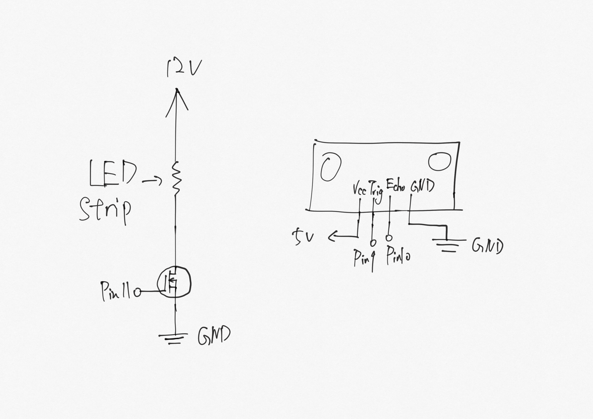

Overview
I have created a device that could detect the distance and adjust the brightness of the LED strip corresponds to the distance. When the distance is further, the LED strip will become brighter, when the distance is closer, the LED strip will become dimmer.
Schematic
- In order to light up the LED strip, I choose to use the N-MOSFET transistor and external power supply with 12V. For the input source, I choose to use the ultrasonic sensor.
- On the box of the LED strip, I find the information of its current at 12V is 1.5A which is samller than the max current of the transistor: 32A. 
Circuit
According to the schematic, I have built the circuit with Arduino on the breadboard.
Firmware